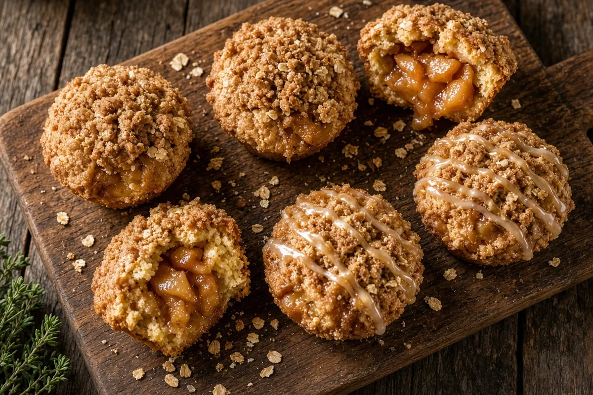

Apple Pie Mini Cakes
Individual apple-pie cakes baked in a muffin tin: brown-butter crumb, a spoon of cinnamon apple in the center, oat streusel on top, and an optional maple glaze. Mix a tart apple with a sweet one so the filling stays pie-like, not sauce.

12 servings
By
Yield: 12 mini cakes
Prep:
Cook:
Total:
Ingredients
Apple filling
- 1 tablespoon unsalted butter
- 2 medium apples, peeled, cored, and diced small (about 2 cups; 1 Honeycrisp and 1 Granny Smith)
- 2 tablespoons packed light brown sugar
- 1 teaspoon lemon juice
- 3/4 teaspoon ground cinnamon
- 1/8 teaspoon ground nutmeg
- pinch kosher salt
- 1 teaspoon cornstarch stirred with 1 tablespoon cold water
Streusel
- 1/3 cup all-purpose flour (40 g)
- 3 tablespoons packed light brown sugar
- 1/4 teaspoon ground cinnamon
- pinch kosher salt
- 2 tablespoons cold unsalted butter, cubed
- 2 tablespoons old-fashioned rolled oats
Cake
- 6 tablespoons unsalted butter (85 g)
- 1/2 cup packed light brown sugar
- 1/4 cup granulated sugar
- 1 large egg
- 1 teaspoon vanilla extract
- 1/2 cup whole milk or buttermilk (120 ml)
- 1 cup all-purpose flour (125 g)
- 1 teaspoon baking powder
- 1/4 teaspoon baking soda
- 1/2 teaspoon ground cinnamon
- 1/4 teaspoon kosher salt
For the pan
- Soft butter or baking spray, for the muffin tin
Optional glaze
- 1/2 cup powdered sugar
- 1 to 2 teaspoons maple syrup, plus a splash of milk if needed
Instructions
- Heat the oven to 350 F. Butter a 12-cup muffin tin well, including the rims, or spray it. A small parchment square in the bottom of each cup makes release cleaner, but a well-buttered tin is enough.
- Apple filling: melt 1 tablespoon butter in a skillet over medium heat. Add the diced apples, 2 tablespoons brown sugar, lemon juice, 3/4 teaspoon cinnamon, nutmeg, and a pinch of salt. Cook 4 to 5 minutes, stirring, until the apples are glossy and just tender, still holding their shape. Stir in the cornstarch slurry and cook 30 seconds until the juices thicken. Scrape onto a plate and cool. Do not cook them to mush or the pocket will sink the cake.
- Streusel: in a bowl, rub 1/3 cup flour, 3 tablespoons brown sugar, 1/4 teaspoon cinnamon, a pinch of salt, and the cold butter cubes until you have pea-size crumbs. Stir in the oats. Keep it cold.
- Brown 6 tablespoons butter in a light-colored saucepan over medium heat until the milk solids are amber and it smells nutty, 3 to 4 minutes. Cool 5 minutes. Whisk in 1/2 cup brown sugar and the granulated sugar until glossy. Beat in the egg and vanilla, then the milk. Batter may look slightly split; that is fine.
- Whisk 1 cup flour, baking powder, baking soda, 1/2 teaspoon cinnamon, and 1/4 teaspoon salt. Stir the dry mix into the wet just until no dry flour remains. Batter should be thick, closer to cookie dough than pancake batter.
- Spoon about 1 tablespoon of batter into each cup. Add a heaping teaspoon of cooled apple filling. Cover with the remaining batter, about 1 tablespoon per cup, so the apples are sealed. Top each cake with streusel. Do not press the streusel flat.
- Bake 20 to 24 minutes, until the streusel is golden and a toothpick into the cake (not the apple pocket) comes out with a few moist crumbs. Cake center should read about 200 F if you check it.
- Cool in the pan 8 minutes. Run a thin knife around each cake and lift out onto a rack. Optional glaze: whisk powdered sugar with 1 to 2 teaspoons maple syrup until thick and drizzleable; add a splash of milk only if it will not fall off a spoon. Drizzle over the warm cakes. Best the day they are baked. Covered at room temperature 2 days, or refrigerated 4 days. Rewarm 8 minutes at 300 F.